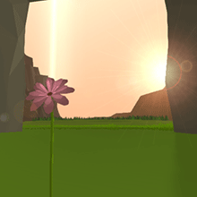
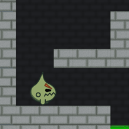

ZERO |
2014-Present |
ZERO is a game I have been developing on and off for a couple of years. ZERO has gone through a few different reincarnations. It began as an exercise in graphic design, became an exercise in fun play, and has now become an exercise in mobile games. I've released it twice, and plan to release it again soon for mobile devices! |

|
EIGHTEEN |
2015-Present |
EIGHTEEN is a game about growing up and becoming an adult. I'm not an adult yet. So it's still in development. There is a really old build on Gamejolt, but even that build barely resembles the current build. The game will probably be in development for quite a while. |
 |
Orpheus |
June 2015 |
Orpheus is a game about the Greek hero of the same name. It was made in 48 hours based on the theme of "depth" for reddit's BaconGameJam09. I worked on Orpheus with two other people. My contribution was designing levels and writing code for procedurally generating levels as well as making menus and some UI design. |

|
SUBHUMAN |
April 2014 |
SUBHUMAN is a puzzle platformer game I made in 48 hours for Ludum Dare 29. The theme was "Beneath the surface". It was meant to demonstrate how circumstance effects people. Fun story about this game, about halfway through development I slammed my head into a doorframe and had to get stitches! That's not really pertinent though. Just a fun story. |

|
Bitey! |
March 2014 |
Bitey! is a puzzle platformer game that I co-developed with Daniel Sitnick based on the theme "Hunger". The game was made in under 48 hours, and I was responsible for mechanical design, programming, and the UI. Bitey! won 3rd place in reddit's BaconGameJam07. |
 |
Minimus |
April 2013 |
Minimus was made in 48 hours for Ludum Dare 26 based on the theme "minimalism". Minimus is a puzzle game in which you play a circle escaping a ring while being attracted by the gravity of other circles. As you move, you shrink, giving you a limited amount of moves in each level. Minimus was also the first game of mine that I would call artsy, dealing with loneliness and frienship. |

|
Incipio |
2012 |
Incipio was the first game that I finished. I programmed it on my own in C#/XNA. The art was made by a guy named Rudi Garcia. It's essentially a top-down shooter wherein the enemies spawn and move with the music in the background, made by SYNC. Releasing Incipio was a really tough experience for 15 year old me, so there is a large gap between its release and the rest of the games I have released. I still have not finished any 'big' projects since. |

|